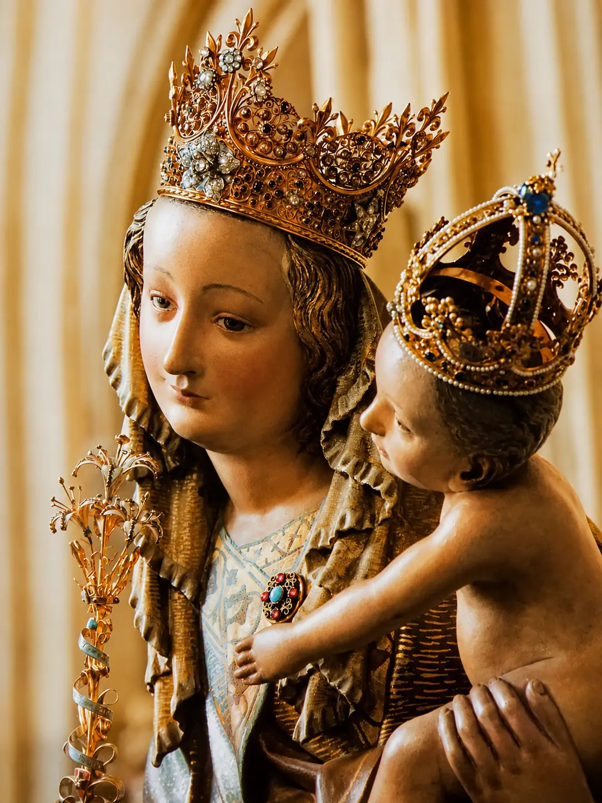

Símbolos Institucionales
Nuestros símbolos institucionales reflejan la identidad, los valores y el espíritu del Colegio Santa María de la Esperanza, y fortalecen el sentido de pertenencia en toda la comunidad educativa.
Nuestra Identidad
Los símbolos institucionales representan la historia, la espiritualidad y los valores que han acompañado al Colegio Santa María de la Esperanza desde sus inicios. Cada uno expresa el compromiso de formar personas llamadas a ser luz y esperanza para el mundo de hoy.
Escudo
Representa nuestra fe, esperanza e identidad institucional.
Bandera
Expresa la esperanza, la verdad y el servicio que inspiran nuestra misión educativa.
Lema Institucional
Ser Luz y Esperanza
para el mundo de hoy
Escudo Institucional
Nuestro escudo reúne los principales elementos de la espiritualidad, identidad y misión educativa del Colegio Santa María de la Esperanza. Cada símbolo expresa un aspecto del proyecto formativo inspirado en la Congregación de Hermanas del Niño Jesús Pobre.
La Estrella
Representa a María como luz que guía el camino de nuestra comunidad educativa.
El lirio
Símbolo de pureza, sencillez y entrega, inspirado en la vida cristiana.
Cristograma PX
Centro de nuestra misión educativa y fundamento del proyecto evangelizador del colegio.
Identidad Institucional
El nombre del colegio expresa el compromiso permanente de ser una comunidad de fe, esperanza y servicio.
El círculo
Nuestro escudo es redondo porque el círculo representa lo infinito y expresa nuestra apertura permanente a Dios.
La bordadura dorada
Simboliza la valentía y recuerda a los guerreros distinguidos por su esfuerzo. Nos invita a enfrentar con responsabilidad nuestros deberes y a ser soldados de Cristo.
La estrella
Representa a María, Estrella del Mar. Es símbolo de luz, verdad, paz, prudencia y felicidad. Su color dorado expresa nobleza, sabiduría, constancia y la dignidad de ser hijos de Dios.
El Lirio
El lirio es símbolo mariano de pureza, transparencia y generosidad. Nos invita a vivir haciendo el bien siguiendo el ejemplo de María.
El Cristograma PX
El lirio está insertado sobre el Cristograma de Cristo porque María encuentra su máximo sentido en Él y conduce siempre hacia Jesús.
Mensaje del Escudo
El escudo de Santa María de la Esperanza nos invita a la lucha, a la sabiduría, al servicio y a vivir como auténticos discípulos de Cristo, llevando esperanza y luz a quienes nos rodean.
Bandera Institucional
La bandera del Colegio Santa María de la Esperanza representa nuestra identidad, la fe y el compromiso de formar personas llamadas a ser luz para el mundo.
Azul Celeste
Verdad, lealtad y caridad.
Dorado
Luz, nobleza y sabiduría.
Escudo
Nuestra identidad espiritual.
La Bandera Institucional es el principal símbolo de identidad del Colegio Santa María de la Esperanza. Representa nuestra comunidad educativa, sus valores y el compromiso de formar personas llamadas a ser luz para el mundo.
El color aguamarina
Nuestra bandera es de color aguamarina, resultado de la unión del azul y el verde, evocando el mar porque el Colegio está bajo la advocación de María, Estrella del Mar. En ella se sintetizan las virtudes que queremos vivir diariamente.
El Azul representa
-
Verdad
Nos invita a vivir con coherencia, rectitud y autenticidad, mostrando siempre nuestro verdadero ser. -
Lealtad
Expresa la fidelidad a Dios, a la patria, a la familia y a los principios que orientan nuestra vida. -
Caridad
El amor cristiano por excelencia, que nos impulsa a amar y servir a Dios en nuestros hermanos, viviendo el Evangelio con obras.
El Verde representa
-
Esperanza
Porque somos Santa María de la Esperanza, llamados a ser motivo de esperanza para la Iglesia, la patria y nuestras familias. -
Amistad
Promueve relaciones fraternas, cercanas y respetuosas, viviendo como verdaderos hermanos. -
Servicio
Siguiendo el ejemplo de Cristo, nos invita a servir especialmente a quienes más lo necesitan.
El Escudo en el centro de la Bandera
Símbolo de nuestra identidad espiritual
En el centro de la bandera se encuentra el Escudo Institucional, símbolo de nuestra misión educativa. Así como antiguamente el escudo representaba la empresa y el ideal del guerrero, hoy representa nuestro compromiso de "Ser Luz como María", iluminando la vida de quienes nos rodean mediante la fe, el servicio y el testimonio.
Himno del Colegio
Un canto que expresa la identidad, la fe y la misión educativa del Colegio.
Himno SME
Colegio Santa María de la Esperanza
Letra y Música:
Hermana María Rosa PIJ
Congregación Hermanas del Niño Jesús Pobre
Compañeros alegres marchemos
Entonando un himno al amor,
A la vida, a la patria cantemos
Rehaciendo un mundo mejor.
La mirada al rayar nuevo día,
A la aurora luciente a elevar,
Oh alumnos de Santa María
De la Esperanza, Estrella del Mar.
Recios en el dolor, con valor
y optimismo a vencer,
Sirviendo en calidad, amistad
y realismo a la luz.
Hoy Colombia y la Iglesia
te reclaman por doquier,
Juventud, juventud a la lid,
Fidelidad,
Lealtad a la paz y a la cruz.
Trabajemos sin cesar
con esfuerzo y tesón singular,
Construyendo la ciudad
con virtudes y fraternidad,
El mañana está en tus manos,
si hoy aprendes a estudiar,
Juventud, juventud a la lid,
Integridad,
Por la fe, la verdad, la honestidad.
Santa María de la Esperanza
Patrona de nuestra comunidad educativa, modelo de fe, esperanza y servicio, que inspira nuestra misión educativa y acompaña el caminar de cada estudiante.

Estrella del Mar, modelo de fe y esperanza
El Colegio Santa María de la Esperanza está confiado a la protección de María, quien nos conduce siempre hacia Cristo y nos enseña a vivir con amor, confianza y entrega al servicio de los demás.
Su presencia inspira nuestra vida escolar, fortalece nuestra fe y nos recuerda que la esperanza es una virtud que transforma el mundo.
Santa María de la Esperanza, Estrella del Mar, heme aquí en este lugar, donde el Señor quiere que yo esté y donde puedo alcanzar tus gracias y tu intercesión.
Tú eres el consuelo de los afligidos, el refugio de los desdichados, la salud de los enfermos y el perdón de los pecadores.
Tierna Madre, vengo a refugiarme en ti con la mayor confianza. Los milagros que se han realizado por tu intercesión me llenan de la más grande esperanza.
Tú, Madre de Misericordia, escucharás también mi oración. Tú me puedes ayudar porque eres la más poderosa después de nuestro Señor.
Tú me quieres ayudar porque me amas como hija(o) tuyo. Acuérdate, misericordiosa Virgen María, que nunca se ha oído decir que ninguno de los que, llenos de confianza, han acudido a ti, haya sido abandonado.
Así pues, dígnate, Santa María de la Esperanza, escuchar mi humilde súplica.
Amén.Uniformes Institucionales
Nuestro uniforme expresa el sentido de pertenencia, el respeto y el orgullo de formar parte de la comunidad educativa Santa María de la Esperanza.
Uniforme de Diario
Presentación académica e identidad institucional.
Educación Física
Actividad deportiva, recreativa y pedagógica.
Monograma SME
Aunque el escudo es el emblema oficial del Colegio Santa María de la Esperanza, el monograma SME ha acompañado durante décadas los uniformes institucionales, convirtiéndose en un símbolo de pertenencia y en un recuerdo compartido por estudiantes y familias.